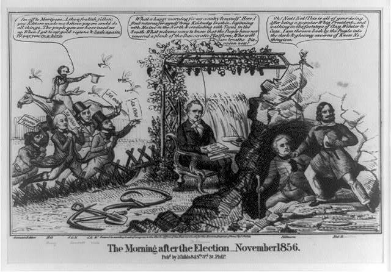
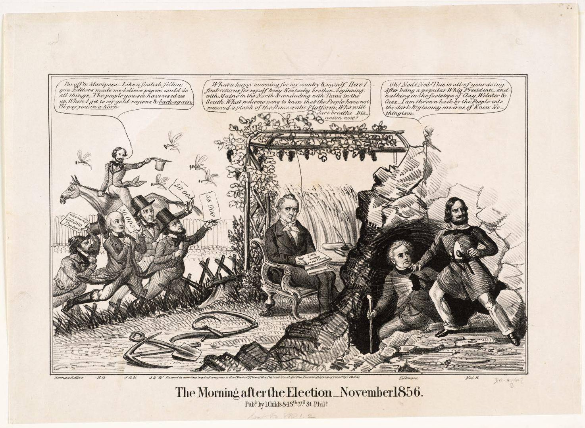

| Field | Detail |
| TOC Fit | Chapter 8 · Essay prompt 8.5 (The Roots of Nativism) |
| Why Here | A Democratic-leaning cartoon made just after the 1856 election shows the winner, James Buchanan, celebrating that no one will “breathe Disunion,” while Millard Fillmore, the American Party candidate, laments being thrown “into the dark & gloomy caverns of Know Nothingism.” Students can weigh how contemporaries placed the Know-Nothings within the collapse of the old two-party system. |
| Treatment | Public-domain image; speech balloons as transcribed in the repository record |
The presidential election of 1856 was a three-way race. The Democrats nominated James Buchanan of Pennsylvania; the new Republican Party, opposed to the spread of slavery into the territories, ran the explorer John C. Frémont; and the American (Know-Nothing) Party, with support from the remnant of the Whigs, ran former president Millard Fillmore on a platform of saving the Union. Buchanan won with 45 percent of the popular vote, Frémont carried eleven northern states, and Fillmore won about 21 percent of the vote but only Maryland’s electoral votes. The result showed that the Republicans, not the Know-Nothings, had replaced the Whigs as the main opposition in the North, and the American Party soon broke apart. In the cartoon, Buchanan sits among farm tools beside ripe wheat, the editors who backed Frémont chase after him with unpaid bills, and Fillmore, holding a lantern (a Know-Nothing symbol), blames Ned Buntline (Edward Z. C. Judson), a writer and nativist organizer. Editorial note. The plan located this print through a DPLA exhibition (Boston Public Library copy, via Digital Commonwealth). This entry records the Library of Congress impression, whose catalog record transcribes the speech balloons; the Boston Public Library copy is noted as an alternate image. The balloon text is reproduced from the Library of Congress catalog description (a public-domain federal transcription), omitting the cataloger’s bracketed identification of Buchanan’s “Kentucky brother” as John C. Breckinridge; the spelling “Frémont” in the speaker label is the compiler’s. Check the text against the image. CAUTION: This is a partisan image made to celebrate Buchanan’s victory and mock his rivals; read it as its maker’s argument. |
|
 |
|
 |
|
UNIT 3 · AN EXPANDING NATION | HISTORY B17A | DANIEL GARZA, M.A.
|